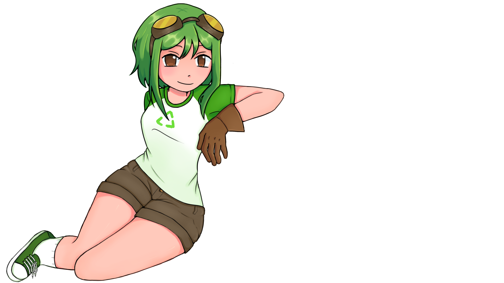

Poluição em POA
Mapa de Focos e Ecopontos
Esgoto a céu aberto
Descarte irregular
Poluição do ar
Focos Reportados:
Ecopontos Fixos em POA
Ecoponto Centro:
Descarte de Eletrônicos
Ecoponto Humaitá:
Entulhos e Móveis
Ecoponto Restinga:
Lixo Orgânico e Reciclável
Inicio
Mapa
Denuncias
